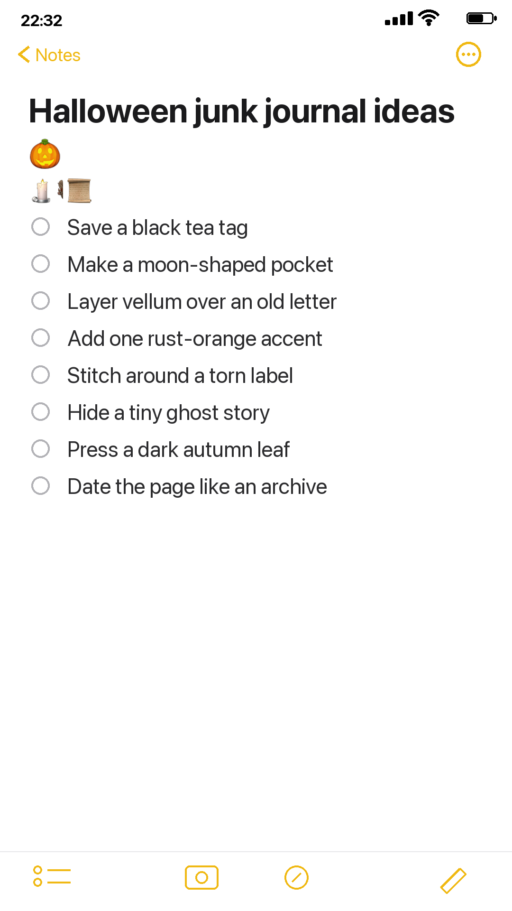
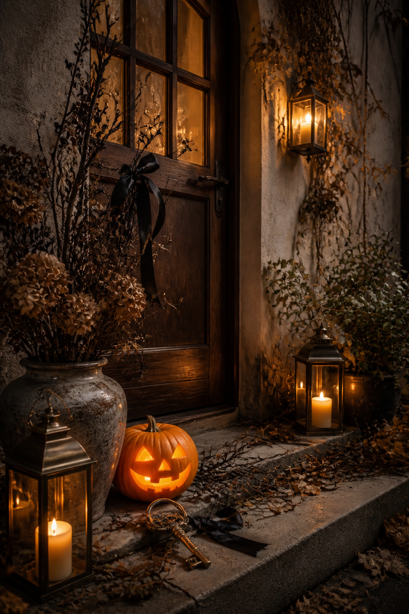

Halloween pages become more interesting when they feel discovered rather than decorated. A torn label, a dark leaf, or a sentence hidden inside a pocket can suggest a whole story without covering the spread in obvious seasonal symbols. These ideas are deliberately small, so you can use one on a quiet page or combine three into a deeper October scene.

Begin with something ordinary
Save a black tea tag, a brown paper wrapper, the string from a parcel, or a receipt from a rainy afternoon. Ordinary pieces give the page a believable beginning. Darken an edge with ink or tea only where it helps the object belong; it does not need to look ancient everywhere.
Use one rust-orange accent instead of several bright Halloween colors. A narrow thread, tiny label, postage mark, or painted paper scrap is enough. Against cream, charcoal, and tobacco brown, that single warm note feels like candlelight.
Make a moon-shaped pocket
Trace a circle on folded paper, cut it in half, and glue only the curved edge and one short side. Leave the top open. A vellum moon creates a softer effect, while black paper makes the contents feel more secret. Tuck in a miniature ghost story, a remembered dream, or three words overheard in October.
If the pocket needs structure, stitch around the curve before attaching it. Uneven hand stitching suits the mood. Let the thread tails remain visible rather than trimming everything into neatness.

Layer the page like an old file
Put translucent vellum over a letter, map, or handwritten page so only fragments remain readable. Add a torn label across one edge and date it as though it came from an archive. A number, place name, and short note are often more evocative than a long quotation.
For a natural detail, press a dark autumn leaf flat for several days before using it. If it feels brittle, trace its silhouette instead, or scan and print it. A real leaf can be secured beneath vellum or held inside a pocket so it is protected from repeated handling.
Let one clue stay unexplained
A small keyhole, a black ribbon knot, a house number, or an unfamiliar name can become the page's mystery. Do not explain every object. Leave one clue without a caption and let the reader decide what happened.
If you work across a two-page spread, keep the unexplained clue on the quieter side and repeat only its colour on the busier side. This small connection makes both pages belong together. A plum thread can answer a plum flower; a brass number can answer a tiny gold mark. The objects need not match exactly.
The easiest page formula is simple: one found paper, one translucent layer, one dark shape, and one private sentence. Stop when the story can be felt. Halloween atmosphere comes from restraint, contrast, and curiosity more than from the number of decorations on the desk.
Find more seasonal techniques in the Sentimentalica journal archive.